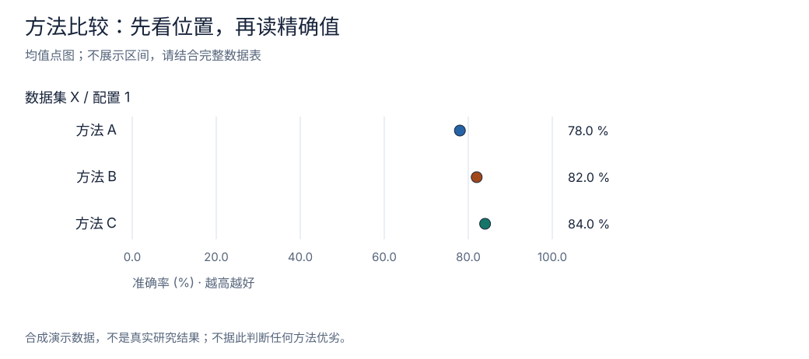
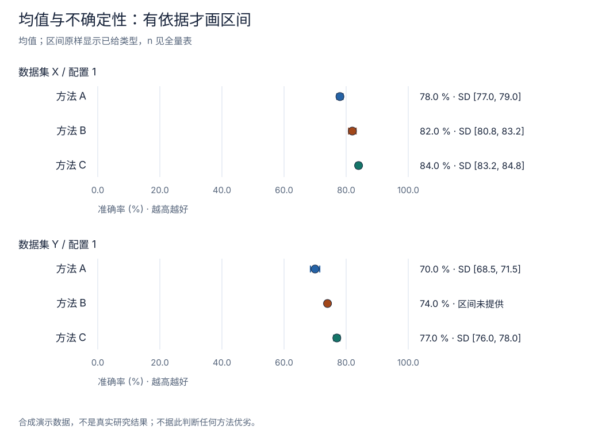

EXPERIMENTS / EDITABLE STARTER
同一配置下的质量与成本
合成演示数据，不是真实研究结果；不据此判断任何方法优劣。
chart-dot.svg
窄屏可横向滚动；完整值见下表。

chart-interval.svg
窄屏可横向滚动；完整值见下表。

chart-small-multiples.svg
窄屏可横向滚动；完整值见下表。

chart-tradeoff.svg
窄屏可横向滚动；完整值见下表。

chart-heatmap.svg
窄屏可横向滚动；完整值见下表。

完整记录
表格可横向滚动；缺失、配置和来源不省略。
| 数据集 | 方法 | 配置 | 指标 | 原值 | 单位 | 状态 | n | 区间 | 来源 |
|---|---|---|---|---|---|---|---|---|---|
| 数据集 X | 方法 A | 配置 1 | 准确率 | 78 | % | ok | 5 | SD [77, 79] | 合成演示/X/A/accuracy |
| 数据集 X | 方法 B | 配置 1 | 准确率 | 82 | % | ok | 5 | SD [80.8, 83.2] | 合成演示/X/B/accuracy |
| 数据集 X | 方法 C | 配置 1 | 准确率 | 84 | % | ok | 5 | SD [83.2, 84.8] | 合成演示/X/C/accuracy |
| 数据集 Y | 方法 A | 配置 1 | 准确率 | 70 | % | ok | 5 | SD [68.5, 71.5] | 合成演示/Y/A/accuracy |
| 数据集 Y | 方法 B | 配置 1 | 准确率 | 74 | % | ok | 未知 | 未提供 | 合成演示/Y/B/accuracy，仅均值 |
| 数据集 Y | 方法 C | 配置 1 | 准确率 | 77 | % | ok | 5 | SD [76, 78] | 合成演示/Y/C/accuracy |
| 数据集 X | 方法 A | 配置 1 | 延迟 | 12 | ms | ok | 5 | SD [11, 13] | 合成演示/X/A/latency |
| 数据集 X | 方法 B | 配置 1 | 延迟 | 18 | ms | ok | 5 | SD [16, 20] | 合成演示/X/B/latency |
| 数据集 X | 方法 C | 配置 1 | 延迟 | 24 | ms | ok | 5 | SD [21, 27] | 合成演示/X/C/latency |
| 数据集 Y | 方法 A | 配置 1 | 延迟 | 15 | ms | ok | 5 | SD [14, 16] | 合成演示/Y/A/latency |
| 数据集 Y | 方法 B | 配置 1 | 延迟 | 20 | ms | ok | 5 | SD [18, 22] | 合成演示/Y/B/latency |
| 数据集 Y | 方法 C | 配置 1 | 延迟 | — | ms | not_measured | 未知 | 未提供 | 合成演示/Y/C/latency，未测量 |
保留的复核提示
- SUMMARY_COUNT_UNKNOWN: record 5
- UNAVAILABLE_OBSERVATION: record 12 (not_measured)